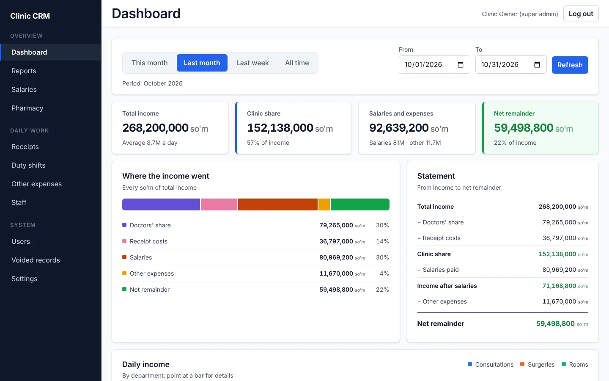
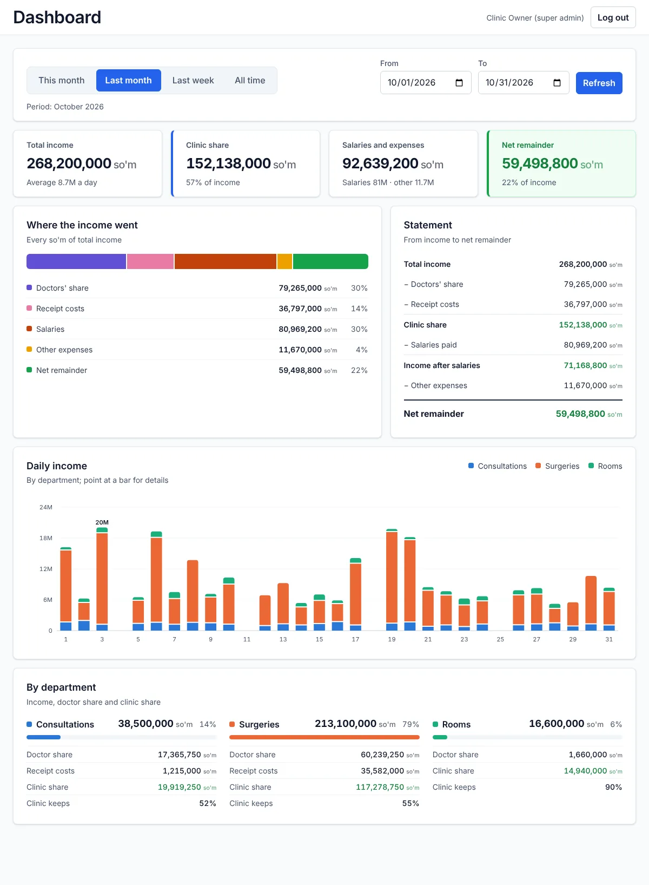
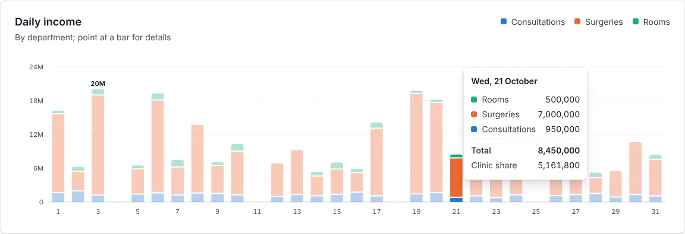
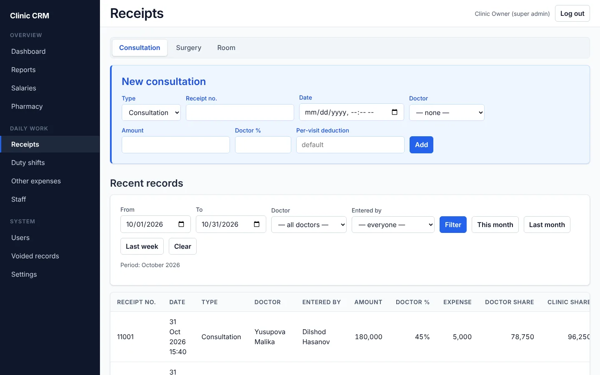
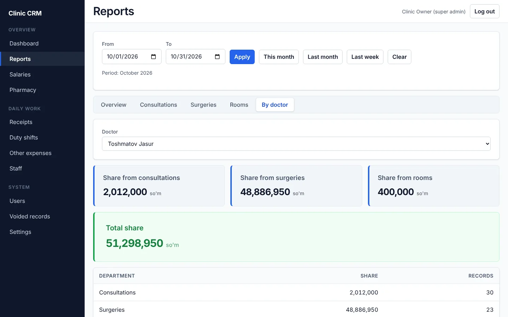
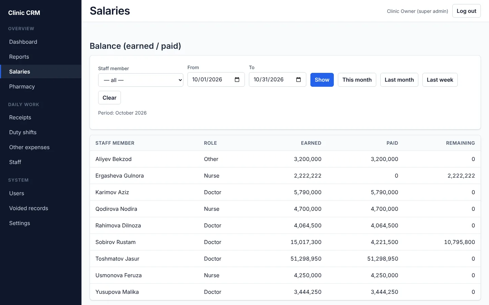
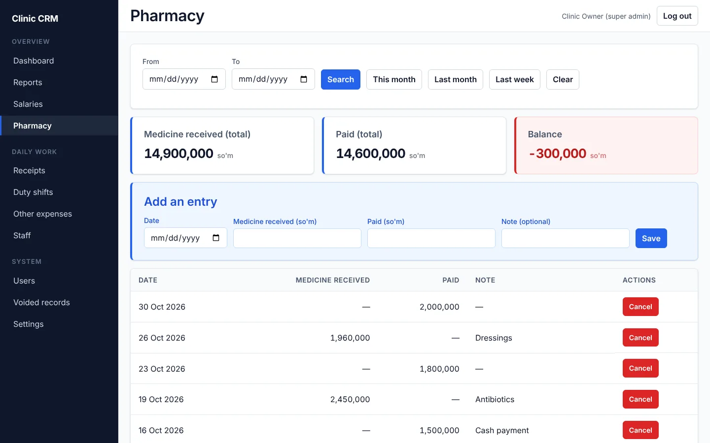

Clinic CRM
A finance and payroll system for a private clinic: receipts, doctors' commissions, salaries, the pharmacy account and expenses, with a dashboard that shows where every so'm went.

The problem
Every visit, surgery and room stay at the clinic produced a paper receipt. At the end of the month someone worked out in Excel what each doctor had earned from a different percentage of every receipt, what each nurse was owed on a prorated salary, what had already been paid as advances, and where the pharmacy account stood. It was slow, easy to get wrong, and nobody could see the clinic's real position until the month was over.
What I built
- Receipts for consultations, surgeries and room stays, with the doctor's and the clinic's share calculated live while typing.
- A dashboard that splits total income into doctors' shares, receipt costs, salaries, other expenses and the net remainder, with a statement from income to net, a daily income chart by department, and a breakdown per department.
- Reports by department and by doctor for any date range, exportable to Excel.
- Payroll: earned, paid and remaining for every staff member, with advances, full payments and overtime shifts.
- The pharmacy ledger and expenses, searchable and totalled for any period.
- Staff and access: three roles, and voided records that only the superadmin can restore or delete.
Engineering decisions
Money that adds up
Whole so'm stored as Numeric(12,0) and calculated with Decimal. Each receipt is rounded half-up before totals are summed, so a report always equals the sum of its receipts. The browser preview uses exact BigInt arithmetic.
One source for every number
The dashboard's daily chart is built from the same per-receipt functions as the totals, and a test checks that the chart's days add up exactly to the dashboard figures.
Dates in the clinic's time zone
Reports filter from local midnight to local midnight. I found and fixed a bug where the browser turned "the 1st of the month" into UTC and pulled the previous day into every monthly report.
Fixed an N+1 query
The payroll balance ran five queries per staff member. It now runs five in total, and a test proves the batched and per-person versions return identical figures.
Access and security
Roles enforced on the server. JWT access and refresh tokens with a Redis blocklist, sessions revoked on password change or block, Argon2, rate-limited login and a strict Content-Security-Policy.
Tested and deployed
166 tests against real PostgreSQL and Redis, 69 of them over HTTP. Docker on Render, PostgreSQL on Neon, and daily backups checked with pg_restore.
The source code is private because the system was built for a real clinic, and the clinic stays anonymous. The live demo runs the real interface in your browser on fictional data, in English or the original Uzbek. I'm happy to walk through the code, the data model and the tests in an interview.
Gallery





